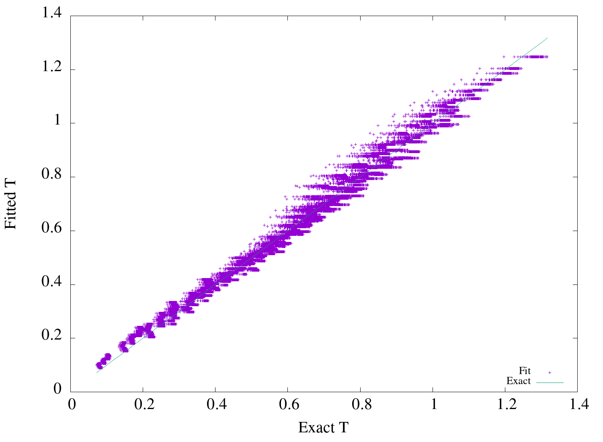
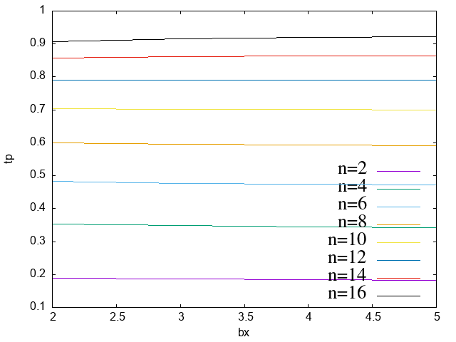

Table of Contents
1 Data
1.1 Generate
Generate data
(defparameter *bigdata* nil) (with-open-file (stream (merge-pathnames "bigdata.csv" *img-path*) :direction :output :if-exists :supersede) (let (bigdata) (loop for h from 3 to 4 by 0.5 do (loop for n from 1 to (truncate 40 h) by 1 do (loop for bw from 3 to 6 by 0.5 do (loop for bx from 2 to 5 do (loop for by from bx to 5 for exact = (simple-building-ftp* :number-of-storey n :height h :bays-x bx :bays-y by :bay-width bw) do (cl-csv:write-csv-row (list n h bw bx by exact) :stream stream) (push (list (list n h bw bx by) exact) bigdata)))))) (setf *bigdata* bigdata)))
1.2 Read
(let (bigdata) (cl-csv:read-csv (merge-pathnames "bigdata.csv" *img-path*) :data-map-fn #'(lambda (data &key csv-reader) (declare (ignore csv-reader)) (let (( *read-default-float-format* 'double-float)) (read-from-string data))) :row-fn #'(lambda (row) (push (list (butlast row) (first (last row))) bigdata))) (setf *bigdata* (reverse bigdata))) nil
NIL
2 Simple Fit
Simpler: T = a(Nh)b is the best fit among the following 3.
2.1 T = a*Nb*hc
(max-fit-%diff (lambda (x a b c) (destructuring-bind (n h bw bx by) x (* a (expt n b) (expt h c)))) '(1 1 1) :save '/simple-fit)
| max %diff | R2 | rmse | Params | Covariance |
| 24.345027 | 0.962490 | 0.039452 | (0.023665 0.819698 1.159684) | (0.000188 0.012736 0.138739) |
2.2 Simpler: T = a(Nh)b
(max-fit-%diff (lambda (x a b) (destructuring-bind (n h bw bx by) x (* a (expt (* n h) b) ))) '(1 1) :save '/simpler-fit)
| max %diff | R2 | rmse | Params | Covariance |
| 26.401998 | 0.953560 | 0.043888 | (0.035808 0.821783) | (0.000186 0.012461) |
The difference in R2 of simple vs simpler formula is not much. And they explain almost 95% of the variation.
2.3 Simplest: T = a(N)b
(max-fit-%diff (lambda (x a b) (destructuring-bind (n h bw bx by) x (* a (expt (* n) b) ))) '(1 1) :save '/simplest-fit)
| max %diff | R2 | rmse | Params |
| 41.710725 | 0.867706 | 0.074075 | (0.117749 0.730460) |
3 Plot
Scatter Plot of Simpler: T = a(Nh)b
(scatter-plot /simpler-fit "dsimpler-fit.png")
However with Nh only, the variation at higher T is very substantial. Hence other parameters must also be playing a great role in T.
4 Sensitivity Analysis
Is it bw or bx,by that play greater role.
Sensitivity of bw is max for h=4,bx=2,by=2. and descreases with decreasing n.
(sensitivity :bw (filter-data :n 10 :h 4 :bx 2 :by 2))
0\.057735705682670196d0
Sensitivity with bx doesn't change much with bw.
(sensitivity :bx (filter-data :bw 6 :n 10 :h 4))
0\.014193363042365683d0
Hence timeperiod is more sensitive to bay width than with bay counts
5 Bay width
To incorporate bay width in the relation for fundamental time period. Lets see the variation of T with bw.
(with-plot "dbw.png" (setup :xlabel "bw" :ylabel "tp") (loop for n from 2 to 12 by 2 do (ezplot (mapcar (lambda (d) (destructuring-bind (x tp) d (list (third x) tp))) (filter-data :n n :bx 2 :by 2 :h 4)) :title (format nil "n=~d" n))))

This shows that the time period decreases with bay width. and the rate of decrease/slope increases for higher N.
5.1 Simple Bw a(Nh)b - c(N*bw)
(max-fit-%diff (lambda (x a b c) (destructuring-bind (n h bw bx by) x (- (* a (expt (* n h) b)) (* c n bw) ))) '(1 1 1) :save '/simpler-bw-fit)
| max %diff | R2 | rmse | Params | Covariance |
| 21.060792 | 0.989629 | 0.020744 | (0.041723 0.859469 0.004816) | (0.000164 0.007763 0.000007) |
(scatter-plot /simpler-bw-fit "dsimpler-bw-fit.png"
(filter-data ))

5.2 A more detailed analysis on variation wrt bw
(table 4 (row "N" "Slope" "C" "R^2") (loop for n from 2 to 10 by 1 for data = (mapcar (lambda (d) (destructuring-bind (x tp) d (list (third x) tp))) (filter-data :n n :bx 2 :by 2 :h 4)) do (multiple-value-bind (_ slope c r) (linear-fit :data data) (row n slope c r))) (plot-table :file "ddSlope-vs-N.png" :title "Slope vs N"))
| N | Slope | C | R2 |
| 2 | -0.0022 | 0.1882 | 0.6370 |
| 3 | -0.0038 | 0.2799 | 0.6970 |
| 4 | -0.0100 | 0.3893 | 0.7627 |
| 5 | -0.0198 | 0.5084 | 0.8403 |
| 6 | -0.0312 | 0.6301 | 0.9400 |
| 7 | -0.0391 | 0.7297 | 0.9397 |
| 8 | -0.0426 | 0.8206 | 0.9353 |
| 9 | -0.0528 | 0.9279 | 0.9678 |
| 10 | -0.0556 | 0.9964 | 0.9271 |
Hence the slope shows almost linear variation with Number of Storeys. Hence, Slope = c * N is appropriate which implies correction = - c * N * bw and finally T = a(Nh)b - c * N * bw (as in Simple Bw a(Nh)b - c(N*bw) )
6 Bx,By
(with-plot "dbx.png" (setup :xlabel "bx" :ylabel "tp") (loop for n from 2 to 12 by 2 do (ezplot (mapcar (lambda (d) (destructuring-bind (x tp) d (list (fourth x) tp))) (filter-data :n n :bw 6 :by 5 :h 4)) :title (format nil "n=~d" n))))

This shows that T is almost constant with bx. Which was also indicated by smaller sensitivity of tp with bx.